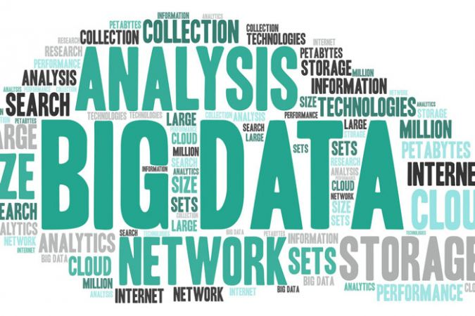

Introduction to NumPy
This chapter, along with Chapter 3, outlines techniques for effectively loading, storing, and manipulating in-memory data in Python. The topic is very broad: datasets can come from a wide range of sources and a wide range of formats, including collections of documents, collections of images, collections of sound clips, collections of numerical measurements, or nearly anything else. Despite this apparent heterogeneity, it will help us to think of all data fundamentally as arrays of numbers. For example, images—particularly digital images—can be thought of as simply twodimensional arrays of numbers representing pixel brightness across the area. Sound clips can be thought of as one-dimensional arrays of intensity versus time. Text can be converted in various ways into numerical representations, perhaps binary digits representing the frequency of certain words or pairs of words. No matter what the data are, the first step in making them analyzable will be to transform them into arrays of numbers. (We will discuss some specific examples of this process later in “Feature Engineering” on page 375.)
For this reason, efficient storage and manipulation of numerical arrays is absolutely fundamental to the process of doing data science. We’ll now take a look at the specialized tools that Python has for handling such numerical arrays: the NumPy package and the Pandas package (discussed in Chapter 3.)
This chapter will cover NumPy in detail. NumPy (short for Numerical Python) provides an efficient interface to store and operate on dense data buffers. In some ways, NumPy arrays are like Python’s built-in list type, but NumPy arrays provide much more efficient storage and data operations as the arrays grow larger in size. NumPy arrays form the core of nearly the entire ecosystem of data science tools in Python, so time spent learning to use NumPy effectively will be valuable no matter what aspect of data science interests you.
The Basics of NumPy Arrays
Data manipulation in Python is nearly synonymous with NumPy array manipulation: even newer tools like Pandas (Chapter 3) are built around the NumPy array. This section will present several examples using NumPy array manipulation to access data and subarrays, and to split, reshape, and join the arrays. While the types of operations shown here may seem a bit dry and pedantic, they comprise the building blocks of many other examples used throughout the book. Get to know them well!
We’ll cover a few categories of basic array manipulations here:
| Attributes of arrays | Determining the size, shape, memory consumption, and data types of arrays |
| Indexing of arrays | Getting and setting the value of individual array elements |
| Slicing of arrays | Getting and setting smaller subarrays within a larger array |
| Reshaping of arrays | Changing the shape of a given array |
| Joining and splitting of arrays | Combining multiple arrays into one, and splitting one array into many |
| > |
Computation on NumPy Arrays: Universal Functions
Up until now, we have been discussing some of the basic nuts and bolts of NumPy; in the next few sections, we will dive into the reasons that NumPy is so important in the Python data science world. Namely, it provides an easy and flexible interface to optimized computation with arrays of data.
Computation on NumPy arrays can be very fast, or it can be very slow. The key to making it fast is to use vectorized operations, generally implemented through Num‐ Py’s universal functions (ufuncs). This section motivates the need for NumPy’s ufuncs, which can be used to make repeated calculations on array elements much more efficient. It then introduces many of the most common and useful arithmetic ufuncs available in the NumPy package.